0x00 GRF 是什么
GRF 是以图形格式存储数据的一种压缩文件格式，在很多人的认知中，最早引入 GRF 的就是 RO 。
GRF 的压缩率甚至比现在流行的一些压缩工具（如 7z）还高、而且可以在无解包的情况下直接快速加载内部的文件，这对于游戏在减少体积的同时还能确保读盘效率的需求不谋而合，导致它从 RO 诞生以来就一直还是御用的压缩格式没有之一。
只要一提到 GRF ，大部分人都会联想到 RO 不是没有原因的。
0x10 GRF 的正确打开方式
有游戏的地方就会有定制，无数年来因为玩家的爱好和热情，涌现了大量有创意特色的素材，而伴随素材的制作，必定涉及到 GRF 的改动。
工欲善其事必先利其器，大量民间自研的 GRF 编辑器就是在这种背景下伴随这些需求百花齐放 ——
- GRFTool、 AGRFTool
- GrfMaker、 GrfMaker2
- GRF-Editor
- …
但是经过这些年的衍化变迁，目前脱颖而出活下来的，非 GRF-Editor 莫属，故本文主要围绕这个工具的使用进行讲解。
截止至 2023-12-22， GRF-Editor 的最新版为 v1.8.5.7
0x20 素材位置和加载方式
对熟悉修改素材的同学而言，都知道 RO 放置素材的位置默认有几个地方：
- 第一优先加载：
data目录 - 根据
data.ini的顺序加载：rdata.grf压缩包（复兴后）data.grf压缩包（复兴前）- 其他自定义的 GRF
若出现同路径的同名文件，先加载的生效
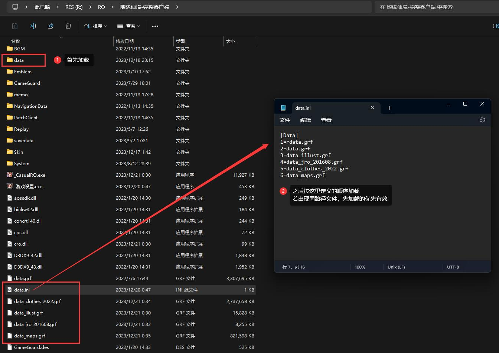
根据这个机制，常见的自定义修改/新增素材的操作可以归纳为以下几种方式：
- 从
data.grf解压对应文件到 data 目录中的同名路径，直接修改即可生效（适用于单个或少量修改） - 从
data.grf解压对应文件，修改后、压缩回data.grf原位置（不建议，升级后会被原版覆盖） - 从
data.grf解压对应文件，修改后，保持文件路径不变，压缩到自定义的xxx.grf中，然后调整data.ini的加载顺序（适用于大量修改，但是单个/少量修改亦可这么做）
0x30 使用 GRF 加密保护素材
在前面提到的三种修改/新增素材的方式中，只有一种是无法添加任何保护的，但是后两种可以通过 GRF Editor 进行加密处理。
这里以 2016 年的日服头饰素材为例：
0x31 新增 GRF
运行 GRF Editor： File -> New -> New Grf :
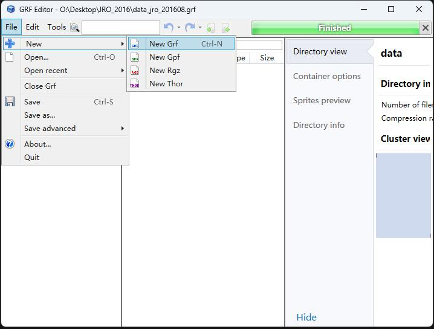
把素材拖进对应位置：
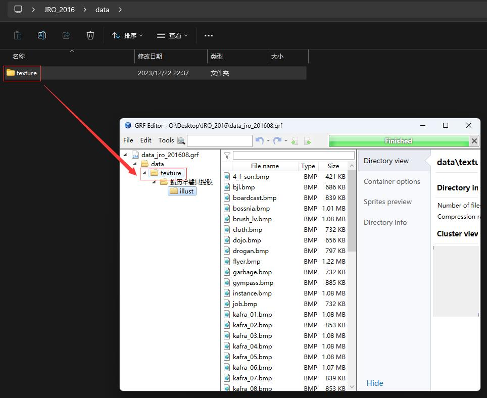
这里顺便说明一下乱码问题：
如果你的韩文目录在 GRF Editor 内显示的不是诸如 蜡历牢磐其捞胶 的汉字乱码，而是像 À¯ÀúÀÎÅÍÆäÀ̽º 这种字符乱码，多半是 GRF Editor 的编码设置不对。
此时在 Tools -> Settings -> General -> Display encoding 中选择 Chinese Simplified (936 - GB2312) 即可：
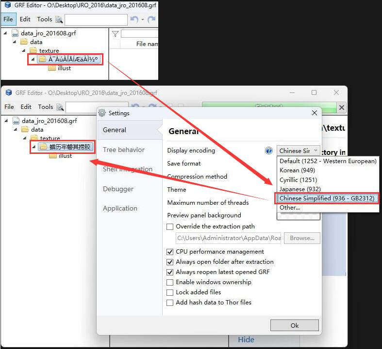
0x32 密码设置 & 生成解密启动器
加密前需要设置密码（写入 dll 文件），同时通过当前的 RO 启动器生成可解密 GRF 的启动器。
具体操作如下：
- 打开加密配置界面： Tools
->GRF Encryption - 在 Encryption password 中设置要加密的密码，注意密码不能有中文，必须是数字或英文字符
- 在 Client Path 中选择当前的 RO 启动器：
- RO 启动器是指那种运行后就进入游戏界面的；不是那种运行后有新闻/升级信息、需要点击「开始游戏」按钮才会进入游戏界面的桌面程序。官方的启动器名称可能像
RagexeRE.exe或Ragnarok.exe，但是定制过的启动器名称就不一定了 - 启动器的名称不能有中文，如这里为
_CasualRO.exe（但是路径可以有中文） - 这一步必须在 DIFF 之后，因为生成的解密启动器不能再修改了，包括文件名也不能改
- RO 启动器是指那种运行后就进入游戏界面的；不是那种运行后有新闻/升级信息、需要点击「开始游戏」按钮才会进入游戏界面的桌面程序。官方的启动器名称可能像
- 在 DLL name 中设置要生成的 dll 名称：
- 官方默认的名称为 cps.dll 且没有植入密码，在这里是把 Encryption password 的密码写进去了
- 可以继续沿用 cps.dll 这个名字，也可以自定义一个新名字，都不影响，因为 dll 的名字是通过逆向的方式写入到 RO 启动器的，使得在 RO 启动时可以找到这个 dll 去解密 GRF
- dll 的名字总长度必须是 7 个字符，由于后缀
.dll已经占了 4 个字符，所以只有 3 个字符是可控的，而且不能有中文，如这里为key.dll（之所以限定长度，是和逆向中的反汇编有关系的，逆向前后的文件大小必须一致）。
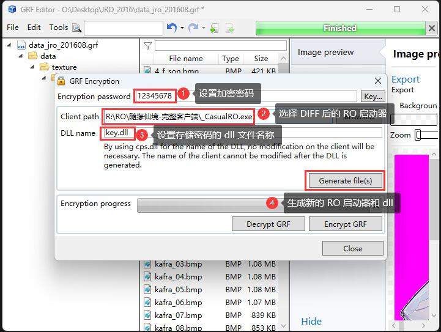
按上述配置好之后，点击 Generate file(s) 按钮，就会生成新的 RO 启动器和 dll 文件到 %AppData%/GRF Editor/Encryption，例如这里生成的文件为 _CasualRO.exe 和 key.dll：
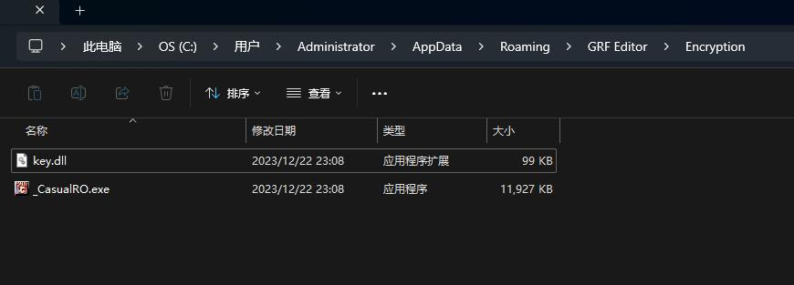
把生成的两个文件覆盖到 RO 客户端的根目录备用即可：
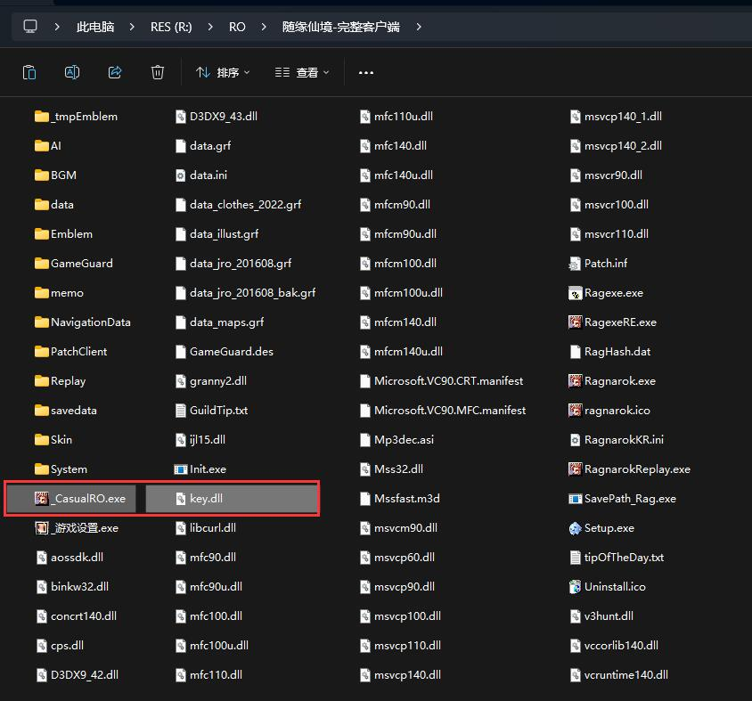
这里有 3 点要注意的：
- 在不修改密钥、或没有重新 DIFF 的情况下，这对文件只需要生成一次
- 未加密前的 RO 启动器记得备份一份，因为无法使用 GRF 生成的解密启动器再生成新的启动器
- 如果在配置时含有中文，会导致在
%AppData%/GRF Editor/Encryption中不会生成解密启动器、只有 dll 文件。这种情况是无法解密、甚至无法启动的（如果替换了原版的 cps.dll 就会报错，因为它和原本的 RO 启动器不匹配）
在官方的 Wiki 中完全没提到中文会导致异常的问题
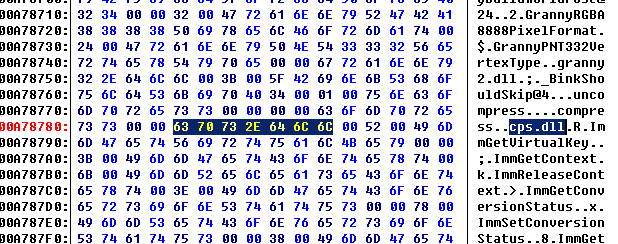
0x33 生成加密 GRF
前面的步骤所生成的两个文件，目的只是为了赋予游戏解密的能力，但是 GRF 还没开始加密的。
加密 GRF 时可以选择两种方式： 全部加密 和 局部加密 。
全部加密需要打开刚才的配置界面：
- Tools
->GRF Encryption - 在 Encryption password 中设置前面所配置的密码（不能是别的密码，否则无法解密）
- 点击
Encrypt GRF， 会在%AppData%/GRF Editor/Encryption中生成加密的 GRF
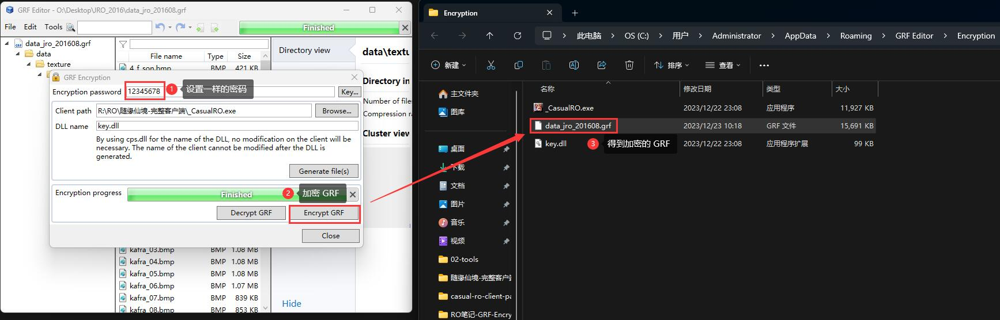
部分加密直接在文件目录中操作即可：
- 选中希望加密的文件或文件夹
- 右键
->Encryption->Encrypt - 如果前面没有设置过 Encryption password，会弹出密码输出窗口，输入前面所配置的密码（不能是别的密码，否则无法解密），已加密的文件字体会变成金色
- 局部加密不会自动保存，需手动点击 File
->Save as… 另存为加密的 GRF
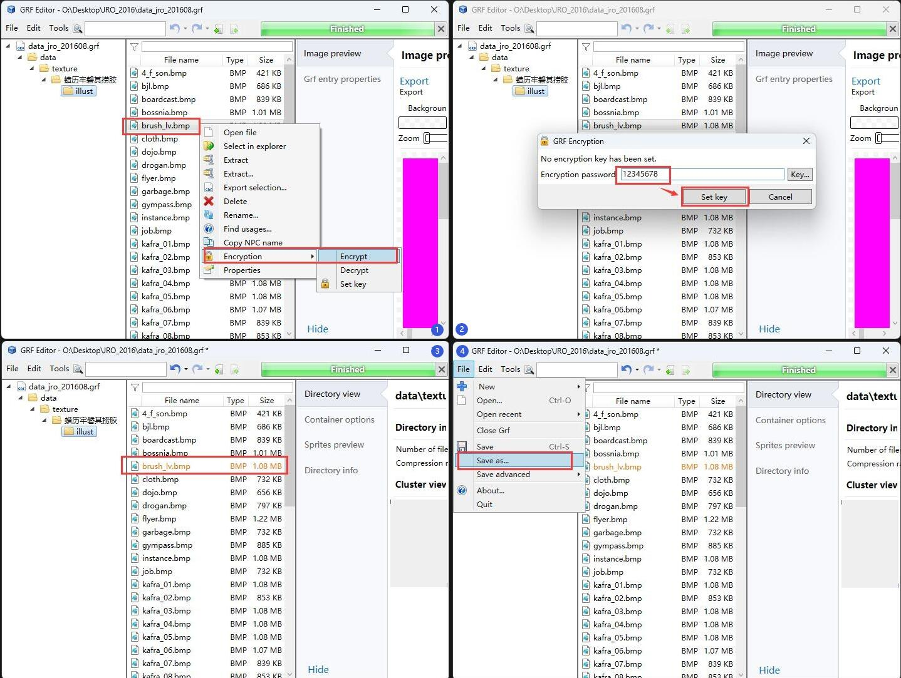
0x36 测试加载加密 GRF
把加密后的 GRF 复制到 RO 客户端的根目录，同时按需调整 data.ini 的加载顺序：
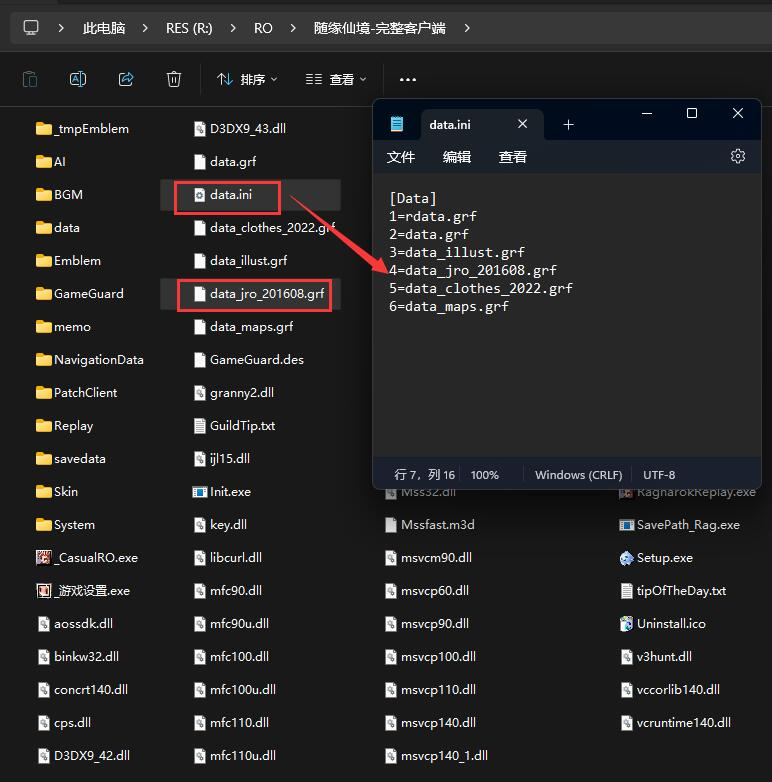
先看看使用原本的启动器的效果，由于无法解密，游戏会报错素材缺失：
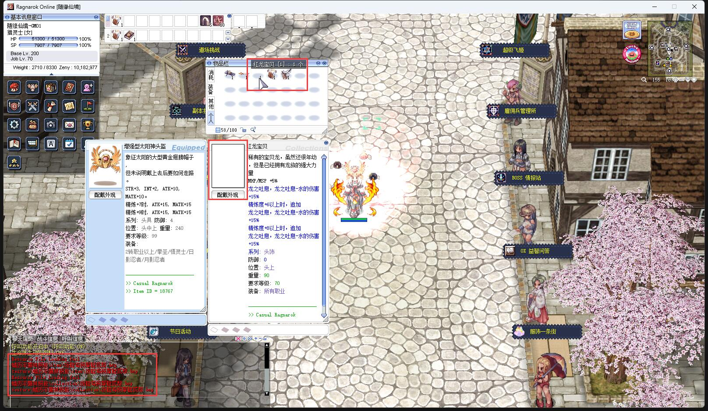
然后使用 GRF 生成的可解密启动器的效果，能正常显示头饰素材了：
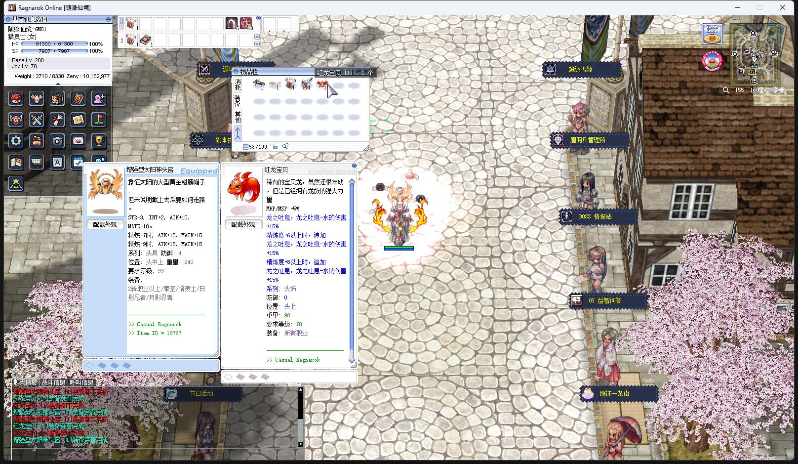
0x40 启动器需要重新 DIFF 怎么办？
当在生成一堆加密的 GRF 并且已经发布给玩家使用之后，如果需要重新 DIFF 启动器，请务必按照以下步骤执行：
- 把 DIFF 后 exe 启动器的名称，改成和之前一样
- 在 GRF 图形界面设置一样的密码、一样的 dll 名称，并指定新 DIFF 的启动器：
- 重新生成得到的一对文件中，只取 exe 启动器，千万不要取新的 dll ！！！
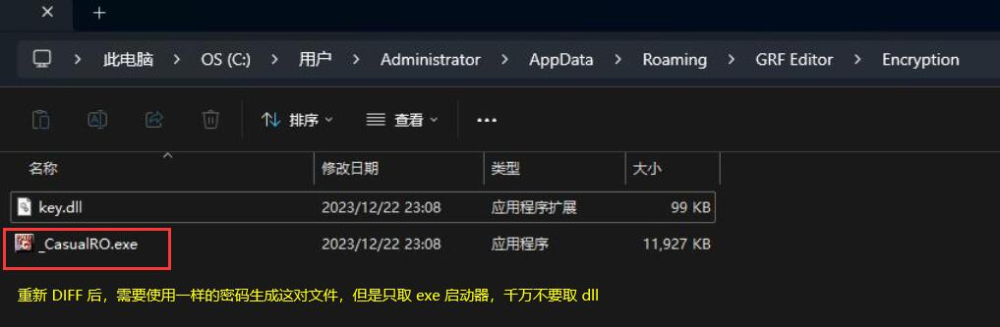
然后把这个 exe 启动器发布到新的补丁即可。
一旦用了新生成的 dll 文件，原本加密过的 GRF 就无法读取了，所以切记切记不要更新 dll
0x50 命令行加密
有时候如果需要集成打包补丁，用界面生成加密 GRF 就很不方便，但是 GRF 提供了 GrfCL 命令行工具。
这个工具在安装目录下以压缩包形式存在，解压到任意地方均可执行：
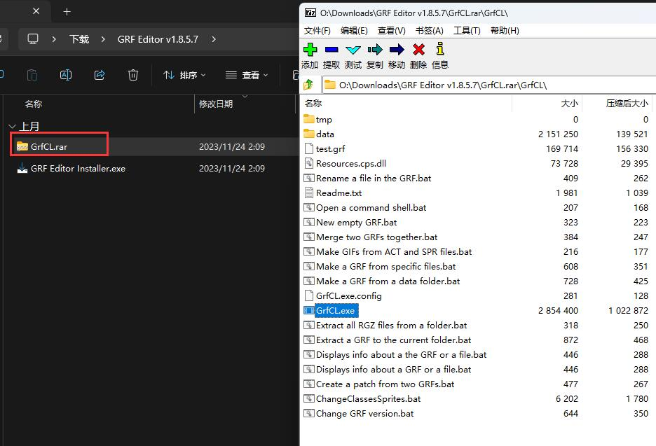
使用的时候可以把 GrfCL 目录添加到系统环境变量的 path 中，亦可切换当前目录到 GrfCL
0x51 生成密钥文件
在使用命令行之前，需要借助 GRF Editor 的界面生成密钥文件备用，具体步骤如下：
- 打开加密配置界面： Tools
->GRF Encryption - 在 Encryption password 中设置前面所配置的密码（不能是别的密码，否则无法解密）
- 点击 Encryption password 输入框后面的
key...按钮，选择Save...保存密钥备用。例如这里保存为my.grfkey（注意这个文件不需要复制到 RO 客户端，只是命令行加密需要使用而已）
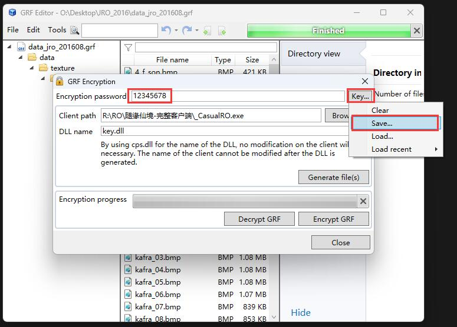
0x52 生成加密 GRF
假如：
- 未加密的 GRF 路径为：
./GRF/data_jro.grf - 已有的密钥文件路径为：
./GRF/my.grfkey - 期望加密为：
./GRF/data_jro_201608.grf
那么只需要执行以下命令即可生成加密的 GRF 文件：
./GRF/GrfCL/GrfCL.exe -o "./GRF/data_jro.grf" -setKey "./GRF/my.grfkey" -encrypt -s "./GRF/data_jro_201608.grf"
注意参数顺序不能变
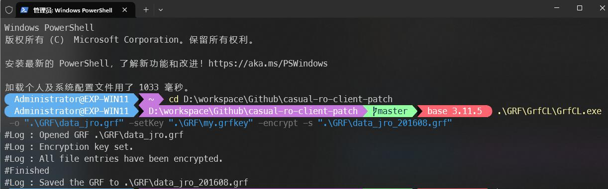
0x53 查看命令帮助信息
关于 GrfCL 更多的命令参数说明，可以执行命令 ./GrfCL/GrfCL.exe -help 查看帮助信息。
帮助信息
-help, -h
Displays help for a command line option.
-open, -o
Opens a GRF.
<1> Path of the GRF to open.
-new, -n
Creates a new GRF with the default file name "new.grf", use -save to change it.
-close
Closes an opened GRF.
-exit
Exits the application.
-compression, -c
Changes the compression level of the GRF for the repacking procedures.
<1> Compression level, between 0 and 9.
-grfInfo, -info, -i
Displays information about the opened GRF.
-fileInfo, -fI
Displays information about a file in the GRF.
<1> GRF path of the file (ex: data/test.txt)
-changeVersion, -cV
Changes the version of the GRF.
<1> Version of the GRF (0x102, 0x103 or 0x200)
-saveAs, -save, -s
Saves an opened GRF.
Save path of the GRF (using the same filename as the opened GRF will overwrite it).
-options
Adds a property or an option to a GRF/Thor container.
/UseGrfMerging The patching mode used by the Thor file. If 'true', the Thor file will be merged in the target GRF set.
/TargetGrf Name of the target GRF used by the Thor file while patching. Requires UseGrfMerging to be set to 'true'.
-sequenceMode, -sM
Enters the Sequence Mode. This mode allows you to enter a sequence of commands manually, which is useful if you want to modify a GRF by yourself instead of using a batch file.
-exitMode, -eM
Exits the Sequence Mode if it's running.
-extractFiles, -eFiles
Extracts all files of a node in the GRF to a specified folder.
<1> GRF path of a folder (ex: data/texture).
<2> Path of the extraction folder (ex: C:/Game/data)
-extractGrf, -eGrf
Extracts a GRF file.
<1> Path of the extraction folder (ex: C:/Game/MyRO).
/outputFromContainerPath Extracts the files where the container is located.
/outputUsingFilename Extracts the files where the container is located using the filename as the base directory.
-extractFolder, -eFolder
Extracts files inside the GRF to a specified folder.
<1> Path of the extraction folder (ex: C:/Game/data).
<...> GRF paths of the files (ex: data/test.txt).
-extractRgz, -eRgz
Extracts a RGZ file.
<1> Path of the RGZ to extract.
<2> Path of the extraction folder (ex: C:/Game/MyRO).
/outputFromContainerPath Extracts the files where the container is located (true or false, false by default).
/outputUsingFilename Extracts the files where the container is located using the filename as the base directory (true or false, false by default).
-add
Adds files or folders to an opened GRF (all subfiles in folders are added as well).
<1> GRF path to add files or folders to (ex: data/texture).
<...> List of files or folders to add.
-rename
Renames a file or a folder inside the GRF.
<1> GRF path of the file or folder.
<2> New GRF path of the file or folder.
-delete, -del
Deletes files or folders to an opened GRF.
<...> List of GRF files or folders to delete (ex: data/texture data/test.txt).
-move, -moveFiles, -mF
Moves a list of files to a GRF path.
<1> GRF path of the folder.
<...> GRF paths of the files.
-setKey
Sets the encryption key.
<1> Encryption key file path.
-encrypt
Encrypts an entire GRF or a Thor file. An encryption key must be set with -setKey.
-decrypt
Decrypts an entire GRF or a Thor file. An encryption key must be set with -setKey.
-extractDllInfo, -eDllInfo
Extracts information from the DLL.
<1> Path of the DLL.
-undo
Undo the latest operation if possible.
-redo
Redo the latest opration if possible.
-merge, -m
Merges two GRFs together, use the third argument to save the result elsewhere. There should be no opened GRF.
<1> Path of the base GRF.
<2> Path of the GRF with files to add to the base GRF.
Path of the output GRF, the default value is the base GRF.
-makeGrf, -mGrf
Makes a GRF from a folder (a data path is created).
<1> Path of the GRF to save the file to (ex: C:/myGrf.grf).
<2> Path of the data folder (ex: C:/Games/MyRO/data).
-patch, -p
Makes a GRF by substracting a recent GRF on the opened GRF. It uses MD5 to compare each file. This command closes the opened GRF.
<1> Path of the recent (newer) GRF.
<2> Path of the resulting GRF.
-tree, -t
Displays the structure of the GRF in a tree view mode.
GRF path of a folder (displays the tree from a specific folder).
Displays files (true or false).
Search option (top or all).
-readLine
Reads characters until the return key is pressed (use -break if you just want to pause the application).
-write
Displays a message on the console.
<1> Message to be displayed.
-cpuPerf, -cpu
Enables or disables the CPU performance management.
<1> Service enabled (true or false).
-beep
Makes a system sound (can be used to tell when an operation has finished).
Frequency of the sound (a good value is around 900).
Duration of the sound, in ms (a good value is around 300).
-shellOpen
Opens an explorer window and select the file (or folder).
Path of the GRF to open (leave empty to open the currently opened GRF).
-breakOnExceptions
Requires a key press on exceptions.
<1> Breaks on general exceptions (true or false).
Breaks on GRF exceptions (true or false, false by default).
-exitOnExceptions
Terminates the application on any exception.
<1> Exits on any exception (true or false, false by default).
-log
Enables or disables the logger.
<1> Logger state (true or false, true by default).
-break
Breaks and wait for a keystroke.
-encoding, -enc
The encoding option only works for extracting or adding files, it won't change the display of the console.
-timer, -stopwatch
Starts or stops a stopwatch and displays the result on the console.
<1> Starts or stops the timer (start or stop).
Timer ID, put any integer value that will be used to identify the timer.
-thorPack
Packs configuration files to Thor Patcher's executable.
<1> Path of the non-packed Thor Patcher.
<2> Path of the output Thor Patcher.
<3> Path where the config.ini file is located. Leave empty to use the current directory.
<...> Directories to pack. Example : "images" "BGM"
-thorUnpack
Retrieves the configuration files from a packed Thor Patcher.
<1> Path of the Thor Patcher.
-gif, -actToGif
Creates a GIF animation file from an ACT file (SPR is required as well).
<1> Path of the destination folder of the GIF file (ex: C:/gifs/).
<2> Path of the ACT file (if a GRF is opened, it will look for the ACT in it first).
<3> Action index (0 based, an animation (idle, walking, attacking, etc) has 8 actions).
/bColor Background color used, ARGB based (default value is white, ex: #FFFFFFFF).
/fBaseId Frame base index (default value is 0).
/fEndId Frame end index (default value is -1, meaning the end frame).
/uniform Uniform the frames (default value is true).
/gColor Guidelines color used, ARGB based (default value is transparent, ex: #00000000).
/scaling BitmapScalingMode, will create smoother images depending on setting (values are NearestNeighbor or HighQuality, default value is NearestNeighbor but it might not be available on Windows XP)
/ignore The function won't be executed if the SPR corresponding file is missing (value is true or false, false by
default)
/fixScale Indicates the scale factor. If the value is -1, the sprites will be resized to 100%. If the value is -2, only full resized sprites will be scaled down to 100%. Other values will be multiplied by the animation's scale.
/delay Overrides the animation speed (value is integer, in milliseconds).
/delayMult Multiplies the delay by a given factor (value is float).
/margin Adds a margin of x pixels around the image.
-rebuildQuadtree, -rQuad
Rebuilds the quadtree for a given map. A GRF must be provided to retrieve the models (rsm).
<1> Path of the RSW file (the GND file must also be present).
<2> Path of the folder where the new map files will be copied.
-printQuadtree, -pQuad
Prints the quadtree for a given map.
<1> Path of the RSW file.
<2> Path of the printed result (.txt format).
-deleteQuadtree, -dQuad
Removes the quadtree for a given map.
<1> Path of the RSW file.
<2> Path of the folder where the new map file will be copied.
-gzip, -cgzip
Compress a file with GZIP.
<1> Path of the file to compress.
<2> Path of the output file.
-dgzip, -ugzip
Decompress a file with GZIP.
<1> Path of the file to decompress.
<2> Path of the output file.
-zlibCompress, -zCompress
Compress a file using the zlib library.
<1> Path of the file to compress.
<2> Path of the output file.
-zlibDecompress, -zDecompress
Decompress a file using the zlib library.
<1> Path of the file to decompress.
<2> Path of the output file.
-addFakeClientinfo
Redirects the client info.
Path of the clientinfo file.
-version, -ver, -v
Displays the current version of this software.
-rgzAnalysis, -aRgz
Gives the analysis output of a RGZ file.
<1> Path of the file to analyse.
-lubDecompile, -lub
Decompiles a .lub files.
<1> Path of the file to decompile.
<2> Path of the output file (default value changes the extension for .lua).
-compareFolder, -compare
Compares two folders.
<1> Path of the first folder.
<2> Path of the second folder.
-hash
Hashes the content of a folder.
<1> Path of the folder to hash.
<2> Search pattern.
<3> Output file.
-hashComp, -hashCompare
Compares two hash files.
<1> Path of the 'server' hash file.
<2> Path of the client hash file.
Path of the repair file.
-imageConvert
Converts an image to another format.
<1> Path of the output folder.
<2> Path of the image file (if a GRF is opened, it will look for the file in it first).
<3> Output format (values are
GifIndexed8|BmpBgra32|BmpBgr32|BmpBgr24|BmpIndexed8|PngBgra32|PngBgr32|PngBgr24|JpgBgr24|JpgBgr32|TgaBgra32|TgaBgr24)
/ignore Stops the conversion if an error occurs (value is true or false, false by default)
/transparentIndex Sets the transparent pixel index (usually set to 0)
/transparentColor Sets the transparent color (usually is #FFFF00FF for pink)